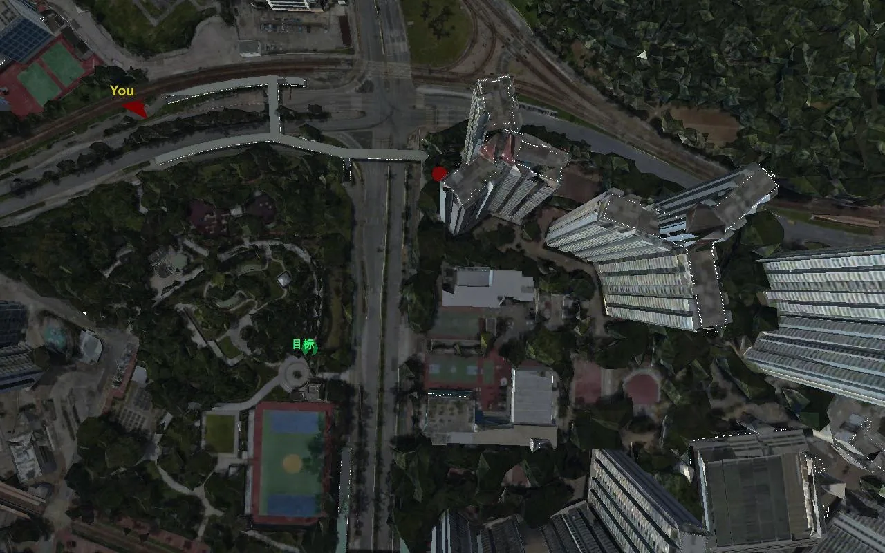
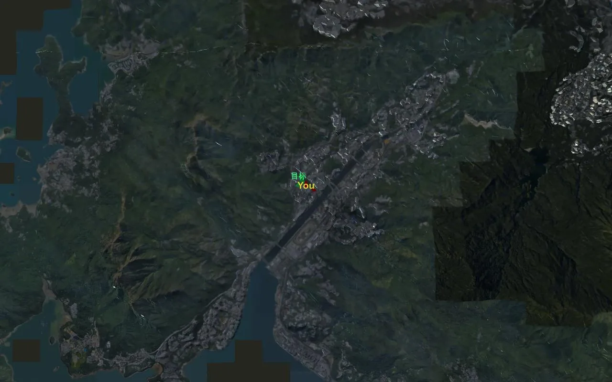

UrbanGround：从局部感知到真实尺度城市空间能动性UrbanGround: From Local Perception to Spatial Agency in a Real-Scale City
直接连接空间推理、具身导航和 3D 城市场景评测，对可靠长程决策具有较强诊断价值。
一句话工作总结
把空间推理置于持续移动和真实尺度约束中，明确暴露局部能力难以组合成长期目标行为的问题。
摘要
UrbanGround 在由全域 3D 地理数据构建的香港物理约束城市副本中，评估 MLLM agent 的局部感知、空间问答和闭环导航；结果显示长程探索中的方向、行人感知和误差修正仍不可靠。
Multimodal large language models (MLLMs) can interpret a street view, but urban agency depends on whether such local evidence remains useful after the agent starts to move. In this paper, we investigate how far current MLLM agents can turn local urban perception into reliable action in a complicated real-scale city. We propose UrbanGround, the first sandbox to make this question testable in a physically constrained replica of Hong Kong built from territory-wide 3D geospatial data. UrbanGround supports closed-loop interaction from a first-person view and provides an interactive map for navigation. Agents can directly enter the 3D city and explore from a first-person view. Our analysis follows the growth of the spatial problem through three research questions. We first test whether an agent can ground a local scene well enough to answer spatial questions after active observation. Then we ask whether that grounding supports navigation as destinations become farther away and less explicit. Finally, we examine whether the resulting behavior survives changes in route availability and pedestrian motion. Contemporary MLLM agents usually show useful atomic abilities in visual recognition and short-range spatial reasoning, while orientation and pedestrian-aware movement remain unreliable. Their central failure emerges over extended exploration, where local abilities do not compose into sustained goal-directed behavior and errors accumulate without effective correction. We hope UrbanGround will support broader study of how far current MLLM agents can explore reliably in complex, open-ended urban environments.
图表/页面预览

{kind=link}
{kind=link}

{kind=link}

{kind=link}
{kind=link}